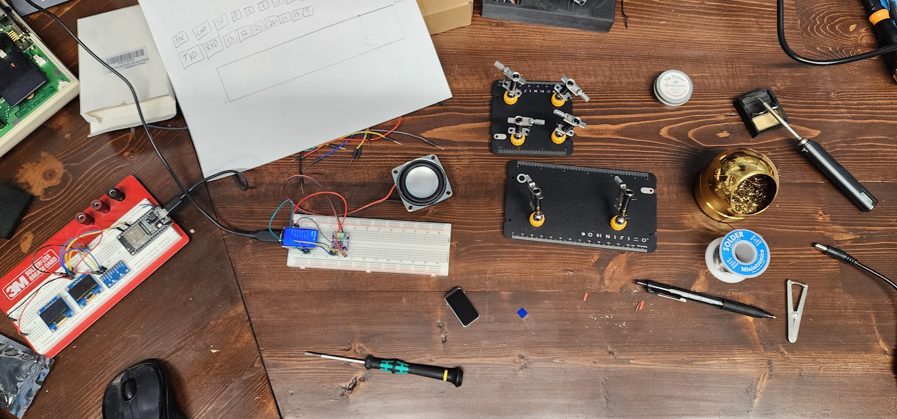

It started with an email newsletter
Last Sunday, November 1, I was browsing an Instructables email newsletter when a project called DIY Cute Mini Internet Radio caught my eye.
Honestly, it was the case that got my attention first. I've been interested in building cool-looking enclosures for my electronics projects for a while, so I'm always on the lookout for clever designs I can learn from or emulate. This wasn't the first internet radio I'd seen, but something about its form factor made me stop and look closer.
One part of the project intrigued me: how did it find internet radio stations, and how did you switch between them? I imagined it might download a station directory from the web or use some other discovery service. I was multitasking and didn't feel like reading through all the Arduino code just to answer that one question, so I copied the code and the Instructables link into ChatGPT and asked:
“I want to know how this project finds and changes between internet radio stations.”
The answer was simpler than I'd imagined. The original ESP32-S3 project didn't discover stations dynamically. It used a predefined list of streaming URLs embedded directly in the Arduino code.
That answered my question. It also got me thinking about what else I could do with the idea.
One question led to another
My next question was about the sound. The original circuit had one speaker and a MAX98357A I²S amplifier, so I asked ChatGPT how to make it stereo. The answer: keep the ESP32, add a second amplifier and speaker, and configure the audio channels appropriately. It also provided a parts list and wiring guidance.
Then I wondered about making it portable. I asked how to power the radio with a rechargeable battery. We talked through a single lithium-ion cell, USB-C charging, and the power conversion and protection circuitry that would be needed. That sounded like a nice future addition, but I decided to skip the battery for the first prototype.
At that point, the natural next step was to open Amazon and order some parts. I already had plenty of ESP32 boards lying around, but I didn't have any MAX98357A amplifier modules or 2-inch, 4-ohm, 3-watt speakers. So I ordered those and waited for delivery.
What if I could control it from the web?
While the parts were on their way, my thoughts shifted from the physical radio to how I wanted to control it. Hardcoding a list of stations in firmware didn't sound particularly convenient. What if a web app could manage the streaming URLs? What if I added five physical preset buttons and assigned each one a station from the browser?
I've used AWS for other projects, so I described an architecture to ChatGPT: API Gateway and Lambda for web APIs, plus AppSync notifications to tell the ESP32 when something changed. I asked whether there was a better approach.
ChatGPT suggested one important change: use AWS IoT Core for communication with the ESP32, rather than having the device listen directly to AppSync events. Keep API Gateway and Lambda for the web application, and potentially use AppSync for real-time browser updates. AWS IoT Core and MQTT are a better fit for a small connected device receiving commands and reporting its state.
That was the point where this stopped being just a cute internet radio and started looking like a cloud-connected electronics project. I could manage stations and presets from a browser, send commands to the radio, and eventually see its status without plugging it into a computer.
From newsletter to working prototype in five days
By Friday, November 6, I had a functional ESP32 prototype that could stream audio from the internet and respond to commands sent through the MQTT client in AWS IoT Core. That was only five days after seeing the newsletter, and I had spent just a few hours actually working on it during that time.
The especially interesting part for me was how I built it. I didn't sit down and write the firmware myself. ChatGPT generated the code and walked me step by step through configuring AWS IoT Core. My role was to describe what I wanted, assemble the hardware, test the result, and work through the problems that came up.
There is still plenty to improve. Internet audio streams can fail, playlists aren't always direct audio URLs, and a device needs to recover cleanly when a connection stalls. But the basic proof of concept works: the ESP32 can play internet radio, connect to AWS IoT Core, and receive remote commands.
What's next?
The next big piece is a web frontend that talks to the AWS backend and, through IoT Core, controls the radio. I want to be able to manage station URLs, assign physical preset buttons, and see what the radio is doing. After that, I can revisit stereo speakers, a rechargeable battery, and, of course, a great-looking enclosure. The enclosure is what got me interested in the first place.
Or maybe I'll get distracted by another project before I finish any of that. Like most things on my workbench, this one could sit on my desk for weeks, months, or even years before I get back to it. That's part of the fun of having a workbench.
Build log

November 1: Discovered the original Instructables project and started exploring modifications with ChatGPT.
November 2–6: Ordered audio parts, assembled the prototype, and connected the ESP32 to AWS IoT Core. By Friday, I could stream audio and control the radio using MQTT.
Next: Build the browser-based station and preset management interface.